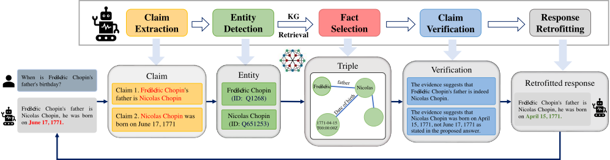
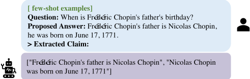
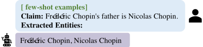
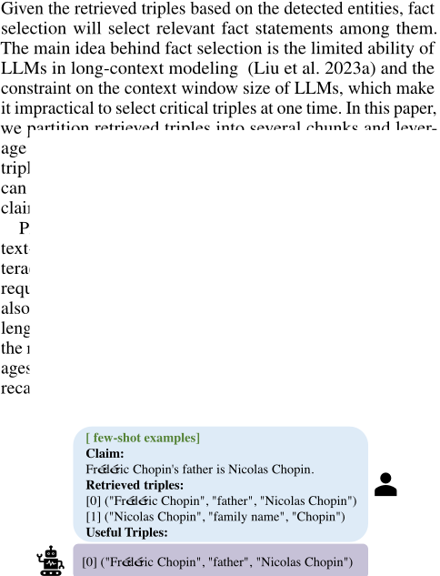
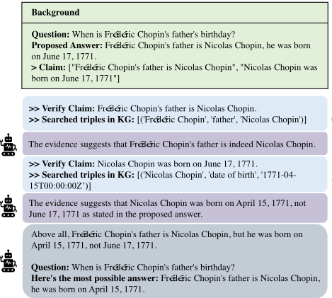
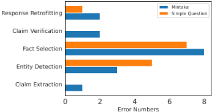
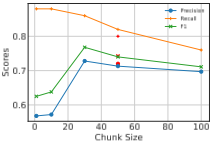
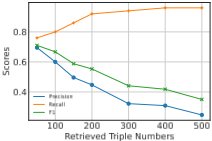
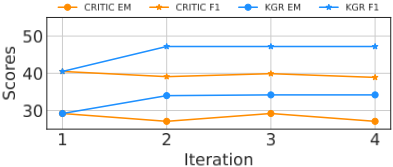

基于自主 Knowledge Graph 修正（KGR）缓解大语言模型幻觉
LLM 在多步推理过程中常产生事实性幻觉，而现有 KG 增强方法只用用户原始 query 检索知识，无法覆盖推理中间步骤所需的事实。论文提出 KGR 框架，用 LLM 自主完成五步链路：从草稿回答抽取原子事实声明、检测关键实体、从 Wikidata 检索局部子图并筛选关键三元组、逐条验证声明并给出修改建议、据此修正回答，该循环可迭代多轮。在 Simple Question、Mintaka、HotpotQA 三个事实 QA 基准上，KGR 在 ChatGPT、text-davinci-003 与 Vicuna 13B 上均一致优于检索式与 query 相关 KG 检索基线，复杂推理任务提升尤其明显；多轮修正下 KGR 保持稳定，而基于搜索引擎的 CRITIC 随迭代轮数增加性能退化。错误分析显示瓶颈集中在实体检测与事实筛选，且检索三元组数量存在 precision-recall 权衡。对团队而言，这是一套"生成后用结构化知识源验证并修正"的可靠性范式，可直接借鉴到知识库问答与产出质检流程。
现有 KG 增强方法仅用用户输入 query 检索知识图谱，只能校验与 query 中显式实体相关的事实，无法处理 LLM 在多步推理过程中因中间知识错误而产生的事实性幻觉（例如推理所需的中间实体信息并未出现在 query 中）。
提出 Knowledge Graph-based Retrofitting（KGR）框架，对 LLM 初始草稿回答做生成后修正：1) 用 LLM few-shot 提示将草稿分解为原子事实声明（claim extraction）；2) 用 LLM 检测声明中的关键实体，并从 Wikidata 检索实体局部子图（以三元组形式表达）；3) 用 LLM 事实筛选器从检索到的三元组（分 chunk 输入）中选出关键项；4) 用 LLM 逐条比对声明与 KG 事实并给出具体修改建议；5) 将整个 KGR 过程合并进单个 few-shot prompt，让 LLM 据此修正草稿。该 "Extraction - Detection - Selection - Verification - Retrofitting" 链路可迭代重复多轮，全程由 LLM 自主执行，无需额外人工或专门训练的组件。
在 Simple Question、Mintaka、HotpotQA 三个事实 QA 基准（各取 50 条验证集样本，报告 EM/F1）上，KGR 在 ChatGPT、text-davinci-003、Vicuna 13B 上均一致显著优于 IR 式方法与 query 相关 KG 检索方法（QKR）及 CoT 基线，复杂推理任务上优势更明显；具体 EM/F1 数值在正文表格中，提供的正文未给出具体数字
多轮修正实验（HotpotQA + text-davinci-003）：KGR 大部分事实错误可在第一轮修正，且随迭代轮数增加效果保持稳定；CRITIC 随迭代轮数增加性能变差
实体检测对比：LLM-based 方法在 Mintaka 上优于 Wikifier、SpaCy 及其混合方案，但作者承认 LLM 用于 claim verification 的实体抽取能力仍不足
错误分析（Mintaka 与 Simple Question 各 50 例）：错误主要来自 entity detection 与 fact selection；claim extraction、claim verification、response retrofitting 可靠性较高
chunk size 实验（Simple Question + ChatGPT）：chunk size 对三元组选择能力影响很小（chunk=100 除外，可能导致长距离依赖建模变差）；更小 chunk 使 precision 降低、recall 升高；三元组随机排序不显著影响选择
检索三元组数量实验：增加检索三元组数量使 recall 渐进提升，但 precision 显著下降
与"生成前检索"方法（KAPING、RHO、KITLM、StructGPT 等仅用 query 检索 KG 作为额外上下文）和"生成后检索"方法（RARR、PURR、CRITIC 等用 web 证据编辑生成结果）不同，KGR 据称是首个将 KG 引入模型回答修正（response retrofitting）的工作：对草稿回答中推理过程涉及的全部事实声明（而非仅 query 实体）做抽取-验证-修正，并以 KG 而非搜索引擎作为知识源，从而在多轮迭代下更稳定；全流程用 LLM few-shot 自主完成，替代需针对特定 KG 训练的监督式实体检测模型。
相关度级别：high
命中能力域：3.1 上下文工程与记忆 | 3.2 提示工程 | 3.3 Agent 架构与工具使用 | 3.5 评测与可靠使用
理由：直接命中团队多个能力域：3.1（RAG/检索增强与结构化上下文组织——将 KG 局部子图三元组作为结构化上下文注入并分 chunk 管理）；3.2（五个步骤全部通过 few-shot prompt 与 in-context learning 实现，是完整的提示模式实践）；3.5（幻觉缓解与 LLM 可靠使用、事实 QA 评测方法、错误分析与 precision-recall 调参经验）；3.3（自主迭代的"抽取-验证-修正"循环配合 KG 检索工具调用，属于验证/反思式执行可靠性设计）。团队核心场景包含知识库问答与产出质量保障，KGR 提供了"生成后用结构化知识源自主验证并修正"的完整可复用范式，且工程化经验（chunk size、检索数量权衡、多轮迭代稳定性）可直接迁移。
建议动作：深入精读并做内部分享
arXiv:2311.13314v1 [cs.CL] 2023年11月22日
Xinyan Guan 1,3 * , Yanjiang Liu 1,3 * , Hongyu Lin 1 , Yaojie Lu 1 ,
Ben He 1,3 , Xianpei Han 1,2 , Le Sun 1,2
1 中文信息处理实验室 2 计算机科学国家重点实验室
中国科学院软件研究所，中国北京
3 中国科学院大学，中国北京
{ guanxinyan2022,hongyu,luyaojie,xianpei,sunle } @iscas.ac.cn,
liuyanjiang22@mails.ucas.ac.cn,benhe@ucas.edu.cn
另一方面，知识图谱（Knowledge Graphs, KGs）存储了大量高质量的事实信息，若与大语言模型（LLMs）相结合，可显著缓解事实性幻觉。例如，在图1中，我们可以参考Wikidata中提供的事实知识"（Nicolas Chopin, date of birth, 1771-04-15T00:00:0）"来修正错误陈述“尼古拉·肖邦出生于1771年6月17日”。近期的工作集中于通过在知识图谱中检索查询所包含的实体来将LLMs与KGs相结合，随后将获得的事实三元组作为额外上下文提供给LLMs，以增强其事实知识（Baek, Aji, and Saffari 2023; Chase 2022）。遗憾的是，这些方法仅限于检索与给定查询中明确提及的实体相关的事实知识。然而，大语言模型的一项基本能力是进行复杂的多步推理。此类推理过程往往需要对推理过程中可能用到的事实知识进行验证和补充。例如，在图1所示的案例中，LLM未能回答该问题，因为它需要关于“尼古拉·肖邦出生于1771年4月15日”这一中间知识。然而，该信息并不涉及查询中出现的实体。因此，先前的方法不足以解决LLMs推理过程中出现的事实性幻觉。
在本文中，我们提出了基于知识图谱的修正（Knowledge Graph-based Retrofitting, KGR），这是一个将LLMs与KGs相结合的新框架，用于缓解LLMs整个推理过程中的事实性幻觉。KGR的主要思想不是使用原始查询从KGs中检索事实信息，而是基于KGs中存储的事实知识，自主地修正LLMs的初始草稿响应。然而，实现上述过程颇具挑战性，因为大语言模型生成的草稿响应通常混杂着与推理过程相关的各种信息，使得对其中的相关知识进行提取、验证和修订非常困难。因此，将知识图谱融入大模型推理过程以缓解事实性幻觉的关键在于：高效地从草稿响应中提取需要验证的信息，从知识图谱中查询并选择相关知识，并利用这些
将事实性知识融入知识图谱（KGs）被认为是缓解大语言模型（LLMs）幻觉的一种有前景的方法。现有方法通常仅使用用户的输入来查询知识图谱，因而无法解决大语言模型在推理过程中产生的事实性幻觉。为解决这一问题，本文提出了基于知识图谱的修正方法（Knowledge Graph-based Retrofitting, KGR），这是一种将大语言模型与知识图谱相结合的新框架，通过基于知识图谱中存储的事实性知识对大语言模型的初始草稿响应进行修正，从而缓解推理过程中的事实性幻觉。具体而言，KGR 利用大语言模型对模型生成的响应中的事实性陈述进行提取、选择、验证和修正，从而实现了一个无需任何额外人工干预的自主知识验证与精炼过程。实验表明，KGR 能够显著提升大语言模型在事实性问答基准测试（benchmark）上的性能，尤其是在涉及复杂推理过程的情况下，这证明了 KGR 在缓解幻觉和提升大语言模型可靠性方面的必要性与有效性。
大语言模型（Large Language Models, LLMs）在人工智能领域中的地位日益凸显。ChatGPT（OpenAI 2022）和 LLaMA（Touvron et al. 2023）等强大模型的出现，对社会、商业和科研等众多领域产生了深远影响。然而，LLMs 仍然存在严重的事实性幻觉（factual hallucination）问题，即由于缺乏内在知识，LLMs 会频繁地生成关于事实信息的、缺乏依据的错误陈述（Ji et al. 2023）。例如，在图 1 中，ChatGPT 由于错误地认为 Nicolas Chopin 的生日是 1771 年 6 月 17 日，而未能对查询“Frédéric Chopin 的父亲的生日是什么时候？”给出准确的回答。事实性幻觉给 LLM 的应用带来了严峻挑战，尤其是在事实准确性至关重要的现实场景中。因此，缓解 LLM 中事实性幻觉的努力已成为自然语言处理（NLP）领域的研究热点（Liu et al. 2021; Kang and Hashimoto 2020）。
* 这些作者贡献相同。
版权所有 © 2024，国际人工智能促进会（Association for the Advancement of Artificial Intelligence，www.aaai.org）。保留所有权利。

知识来验证和精炼草稿响应。
为此，KGR 提出了一个基于 LLMs 的框架，能够在无需任何人工参与的情况下，自主地对初始草稿响应中的事实性陈述进行提取、验证和修正。具体而言，给定一个输入查询以及由 LLM 生成的、包含 LLM 如何解决该问题的推理过程的草稿响应，KGR 会请求一个 LLM 从推理过程中提取需要由知识图谱（Knowledge Graph, KG）验证的事实性声明。如图 1 所示，给定草稿响应“Frédéric Chopin 的父亲是 Nicolas Chopin，他出生于 1771 年 6 月 17 日。”，声明提取步骤将从中生成诸如“Frédéric Chopin 的父亲是 Nicolas Chopin”和“Nicolas Chopin 出生于 1771 年 6 月 17 日”这样的事实性声明。随后，KGR 会识别所提取声明中的关键实体，从知识图谱中检索与这些实体相关的事实三元组，并使用基于 LLM 的事实选择器（fact selector）来识别与草稿响应相关的事实三元组。接着，利用检索到的事实知识与先前从草稿中提取的事实性声明进行比较，以验证其正确性。最后，让 LLMs 依据事实验证的结果对草稿进行修正。该过程可以重复多次，以确保生成答案中的所有事实都与知识图谱中存储的知识保持一致。通过这种方式，我们的方法不仅能够验证查询和响应中的事实，还能够验证推理过程中所使用的事实。此外，由于该流程中的所有阶段都可以利用大语言模型自动执行，我们的方法不需要任何外部组件，因此易于实现。
我们在三个具有不同推理难度级别的标准事实性问答基准测试上，使用三个具有代表性的大语言模型（LLM）开展了实验，其中包括 Simple Question（Bordes et al. 2015）、面向复杂推理的 Mintaka（Sen, Aji, and Saffari 2022），以及面向开放域多跳推理的 HotpotQA（Yang et al. 2018）。实验表明，KGR 能够显著提升 LLM 在事实性问答基准测试上的性能，尤其是在涉及复杂推理过程的情况下，这证明了 KGR 在缓解幻觉方面的必要性与有效性。
综上所述，本文的贡献如下：
幻觉 大语言模型（LLM）中的幻觉一直是自然语言处理（NLP）社区的重要研究焦点 (Ji et al. 2023)。自动化的大规模数据收集过程容易收集到错误信息，这会显著影响生成输出的质量 (Gunasekar et al. 2023)。此外，训练过程中某些数据的过度重复会引入记忆偏差，进一步加剧幻觉问题 (Lee et al. 2022; Biderman et al. 2023)。编码器骨干网络的不完善以及解码策略的差异也会影响 LLM 输出中幻觉出现的程度 (Tian et al. 2019)。近期研究强调了模型输出置信度作为潜在幻觉发生指标的重要性 (Manakul, Liusie, and Gales 2023)。
检索增强 为了解决 LLM 中的幻觉问题，已有研究提出了两大类检索增强方法，可归纳为“生成前检索”（retrieve before generation）与“生成后检索”（retrieve after generation）。生成前检索主要侧重于利用信息检索（IR）为 LLM 提供与查询相关的额外信息。沿着这一思路，UniWeb (Li et al. 2023b) 提出了一种自适应方法来确定所引用网页文本的最优数量；Chameleon(Lu et al. 2023) 利用包括搜索引擎在内的多种工具来增强 LLM 的推理能力；WebGLM (Liu et al. 2023b) 为 LLM 增添了网页搜索与检索能力。这些方法的一个主要局限在于，检索到的文本仅与问题相关，因而无法保证生成内容中与问题无关部分的正确性。生成后检索方法，如 RARR (Gao et al. 2023)、PURR (Chen et al. 2023) 和 CRITIC (Gou et al. 2023)，则利用来自网络的证据自动编辑模型生成的内容。我们的方法利用知识图谱（KG）作为知识库来改造模型生成的响应，同时降低幻觉风险。
KG 增强的 LLM 知识图谱被视为一种可信赖的信息来源，因此常被用于增强模型生成内容。传统方法在训练阶段引入知识表示，这通常需要专用的模型架构以及针对特定模型的训练 (Zhang et al. 2019, 2022)。然而，这对当代 LLM 而言成本高昂。近年来，许多研究者提出在推理阶段注入知识。例如，KAPING (Baek, Aji, and Saffari 2023)、RHO (Ji et al. 2022)、KITLM (Agarwal et al. 2023) 和 StructGPT (Jiang et al. 2023) 尝试从 KG 中检索知识，并将其作为 LLM 的额外输入上下文，以增强其生成能力。然而，这些方法仅检索与问题相关的信息，这限制了整体性能。据我们所知，我们是首个将知识图谱引入模型响应改造的工作。
在本节中，我们介绍所提出的方法 KGR，该方法通过验证链（chain-of-verification）过程自动缓解事实性幻觉。如图 1 所示，给定一个查询及其草稿响应，KGR 通过以下步骤对响应进行改造：1）从草稿答案中提取需要验证的论断；2）检测论断中对从知识图谱检索事实至关重要的实体；3）从知识图谱中检索相关的事实陈述；4）利用知识图谱返回的事实陈述验证所提取的每个论断的事实正确性；5）基于验证结果对先前的草稿响应进行改造。所有这些步骤均由大语言模型（LLM）自身自主执行，无需额外的人工投入。并且该过程可以迭代并重复多次，以确保生成答案中的所有事实都与知识图谱中存储的事实知识保持一致。接下来，我们将分别详细介绍 KGR 中的各个组件。
论断提取（claim extraction）以生成的草稿响应作为输入，从先前生成的草稿中提取所有需要验证的事实性论断。论断提取背后的主要思想是：草稿响应中经常包含各种需要验证的事实性陈述。以图 1 中的示例为例，该草稿响应至少包含两个事实性陈述，即“Frédéric Chopin 的父亲是 Nicolas Chopin”以及“Nicolas Chopin 出生于 1771 年 6 月 17 日”。因此，为了使知识图谱（KG）能够分别验证这些陈述，论断提取会将草稿响应分解为原子事实性论断。
先前的工作已经表明，大语言模型具有通过上下文少样本学习（in-context few-shot learning）从文本中提取各类关键信息的强大能力（Chern et al. 2023）。因此，本文利用 LLM 本身来自主提取所生成草稿响应中的论断。如图 2 所示，我们以一个查询-响应对作为提示输入给 LLM，并期望由此获得分解后的事实性论断列表。

在提取论断之后，实体检测（entity detection）会识别其中提及的关键实体，以用于知识图谱检索。
给定从草稿响应中提取的论断列表，实体检测将检测其中提及的关键实体。然后，我们从知识图谱（KG）中检索所检测实体的局部子图，并以三元组的形式加以表示。实体检测与知识图谱检索背后的主要思想是：我们需要识别论断中的实体，以便检索 KG 中的相关知识。同时，通过在知识图谱中检索局部子图，我们可以确保尽可能多地召回相关三元组。以图 1 中的示例为例，我们识别出实体 Fr´ ed´ eric Chopin 及其实体 id Q1268，从而可以在 KG 中搜索该已识别的实体，以获取与 Claim1 相关的知识。
先前的方法（Brank, Leban, and Grobelnik 2017; Honnibal et al. 2020）依赖于监督微调模型，这类模型需要针对特定知识图谱进行训练，导致其在不同场景下的泛化能力较差。此外，辨别哪些关键实体值得进行事实选择也被证明是一项具有挑战性的任务。
在本文中，我们提示 LLM 来检测实体。如图 3 所示，我们的方法通过利用 LLM 的信息抽取能力（Li et al. 2023a）并采用少样本提示（few-shot prompt），展现出强大的泛化能力。基于少样本提示，我们可以让 LLM 理解哪些实体值得进行事实选择。
监督微调模型与 LLM 之间的性能对比评估见附录。
在检测出实体之后，我们从知识图谱中检索局部子图，并以三元组的形式将其发送至事实选择环节。


在我们选定关键三元组之后，声明验证（claim verification）环节将验证声明的事实正确性，并随后给出建议。
在事实选择（fact selection）选定关键三元组之后，我们利用大语言模型（LLM）将模型生成的声明与知识图谱（KGs）中包含的事实信息进行比较。声明验证的核心思想是为每条声明提出详细的修订建议，因为仅基于所选知识进行回溯修正可能难以令 LLM 信服。如图 5 所示，我们使用 LLM 基于检索到的事实知识分别对每条声明进行验证并提出修订建议，从而推动后续回溯修正步骤的执行。

随后，我们将声明验证结果发送给 LLM，要求其据此对草稿回复进行回溯修正。
在完成所有声明的验证后，回复回溯修正步骤将根据验证建议对生成的草稿回复进行回溯修正。
在本文中，我们利用 LLM 的能力来实现回溯修正。该方法采用带有少样本提示（few-shot prompt）的 LLM，这一策略在先前的研究中已展现出有效性（Gou et al. 2023; Zheng et al. 2023）。如图 5 所示，我们将整个 KGR 过程合并到一个单一的提示中。这使得 LLM 能够发挥其上下文学习（in-context learning）能力，理解 KGR 过程，并增强其基于验证建议进行事实性回溯修正的理解。
通过遵循“提取 - 检测 - 选择 - 验证 - 回溯修正”的循环，我们的 KGR 框架可以进行多次迭代，以确保生成答案中的所有事实都与知识图谱中存储的事实知识保持一致。
我们在三个具有不同推理难度级别的数据集上评估我们的 KGR 框架，包括 Simple Question（Bordes et al. 2015）、Mintaka（Sen, Aji, and Saffari 2022）和 HotpotQA（Yang et al. 2018）。我们还将 KGR 与基于信息检索的方法以及以往与问题相关的知识图谱检索方法进行了比较。
数据集与评估 我们在三个具有代表性的事实性问答（QA）基准测试（benchmark）上进行了实验，包括：
我们分别以 EM 和 F1 分数报告了每个数据集验证集中 50 个样本上的结果。通过比较这三个数据集上的性能，我们可以评估不同方法在缓解事实性幻觉和处理复杂任务方面的效果。
大语言模型（LLM）与知识图谱（KG）实现 我们在闭源和开源大语言模型上评估 KGR 的有效性。对于闭源模型，我们在 text-davinci-003 和 ChatGPT（gpt-3.5-turbo-0301）上进行评估，以考察对齐（alignment）是否会对 KGR 产生影响。对于开源模型，我们在 Vicuna 13B 这一具有代表性的对齐开源模型上评估 KGR，以考察 KGR 能否在紧凑规模的语言模型（LM）上良好运行。我们选择 Wikidata 2（Vrandeˇ ci´ c and Kr¨ otzsch 2014）作为我们的知识库，它涵盖了来自 Wikipedia、Wikimedia Commons（Commons 2023）以及与 Wikimedia 运动相关联的其他 wiki（Meta 2023）等多种来源的结构化数据。
我们将我们的 KGR 框架与以下方法进行了比较，包括：
1 https://wikipedia.org
2 https://www.wikidata.org/
如表 1 所示，我们的方法在各种条件下均显著优于其他方法。
3 https://www.bing.com/.
| Simple Question.ChatGPT | Simple Question.text-davinci-003 | Mintaka.ChatGPT | Mintaka.text-davinci-003 | HotpotQA.ChatGPT | HotpotQA.text-davinci-003 | |
|---|---|---|---|---|---|---|
| Vanilla | 22.0/28.9 | 34.7/45.1 | 42.9/56.1 | 36.7/44.8 | 18.4/31.6 | 22.4/34.6 |
| CoT | 10.0/11.8 | 38.0/46.7 | 53.1/59.3 | 46.3/57.9 | 24.5/34.3 | 29.2/40.5 |
| CRITIC | 12.0/14.3 | 38.0/46.7 | 51.0/58.6 | 44.4/54.0 | 30.6/ 41.7 | 27.1/38.9 |
| QKR | 54.0/60.2 | 56.0 / 62.0 | 48.0/54.6 | 44.0/51.7 | 28.0/38.1 | 22.0/31.9 |
| KGR (ours) | 58.0 / 60.7 | 54.0/57.6 | 53.1 / 60.8 | 52.0 / 60.2 | 32.7 /39.2 | 34.0 / 47.2 |
| | Simple Question.ChatGPT | Simple Question.text-davinci-003 | Mintaka.ChatGPT | Mintaka.text-davinci-003 | HotpotQA.ChatGPT | HotpotQA.text-davinci-003 |
| Simple Question | Mintaka | HotpotQA | |
|---|---|---|---|
| CoT | 14.0/21.9 | 26.0/28.3 | 12.0/19.6 |
| QKR | 40.0/44.0 | 26.5 /32.4 | 12.2 /17.6 |
| KGR(ours) | 46.0 / 46.9 | 26.5 / 34.0 | 10.2/ 20.6 |
| | Simple Question | Mintaka | HotpotQA |
综上所述，我们的方法在各种条件下始终优于其他方法，并展现出强大的泛化能力。结果表明，我们的 KGR 框架更加可靠和有效，尤其是在处理复杂的事实推理任务时。此外，它还展示了我们的方法在开放域问答（QA）场景中的鲁棒性，而在这些场景中，知识检索可能更具挑战性。
我们在表 3 中展示了一个多跳案例的多轮修正（retrofitting）过程，该案例需要被迭代地修正。在该案例中，模型生成的回答在初始推理步骤中出现了事实性错误：它错误地声称 Alex Shevelev 死于俄罗斯莫斯科，而实际上他是在意大利罗马去世的。在修正这一错误之后，我们又遇到了另一个事实性错误，该错误断言罗马是中央联邦区（Central Federal District）的首府。因此，我们需要基于第一轮迭代中已修正的回答再次对其进行修正。

通过这一案例，我们展示了 KGR 的中间结果，包括原子声明（atomic claim）、关键三元组（critical triples）、详细验证以及迭代修正。所有这些都表明了 KGR 的有效性，尤其是在多跳复杂任务的推理方面，验证了多轮修正的可行性，从而确保生成回答中的所有事实都与知识图谱中存储的事实知识保持一致。
In order to gain a comprehensive understanding of the KGR approach, we conducted an exhaustive analysis of incorrect cases based on the Mintaka and Simple Question datasets. After carefully examining the errors, we identified which component causes revision failures. The outcomes of this analysis are visualized in Figure 6.
On closer inspection, it becomes apparent that inaccuracies within the KGR are primarily caused by entity detection and fact selection. Conversely, claim extraction, claim verification, and response retrofitting demonstrate higher reliability. All these findings highlight the significance of refining entity detection and fact selection for further improvements.
On the other hand, our analysis explored the error reason
| Claims | Fact Knowledge | Verification | Retrofitted Response | |
|---|---|---|---|---|
| KGR round1 | Alex Shevelev died in Moscow, Russia. | ( Alex Shevelev , place of death, Rome) | The evidence suggests Alex Shevelev died in Rome , not Moscow, Russia. the | Let's think step by step. Alex Shevelev died in Rome, Italy . And it is the capital of the Central Federal District. So the answer is: Central Federal District. |
| KGR round1 | Moscow is the capital of the Central Federal District. | (Central Federal District, capital, Moscow ) | The evidence suggests Moscow is capital of the Central Federal District. | Let's think step by step. Alex Shevelev died in Rome, Italy . And it is the capital of the Central Federal District. So the answer is: Central Federal District. |
| KGR round2 | Alex Shevelev died in Rome , Italy. | ( Alex Shevelev , place of death, Rome ) | The evidence suggests Alex Shevelev died in Rome. The evidence suggests Rome is the | Let's think step by step. Alex Shevelev died in Rome, Italy. And it is the capital of Lazio . So the answer is: Lazio |
| KGR round2 | Rome is the capital of the Central Federal Dis- trict. | ( Rome , capital of, Lazio) | cap- ital of Lazio not the Central Federal District. | Let's think step by step. Alex Shevelev died in Rome, Italy. And it is the capital of Lazio . So the answer is: Lazio |
| | Claims | Fact Knowledge | Verification | Retrofitted Response |
.
in different stages. The claim extraction often fails to express the central claim adequately, sometimes due to excessive use of pronouns that confuse the model's comprehension. Entity detection has issues with entity extraction granularity. It captures too many common entities like 'films' or 'apple', leading to excessive and useless triples for the claim verification. The fact selection has difficulty extracting the critical triples between multiple triples that contain noise. For the claim verification and response retrofitting, the focus shifts to the model's ability to adhere to the cues provided by the few-shot prompts. Effectively discerning and subsequently rectifying answers within this framework presents a central challenge. The process of fact selection encounters challenges in extracting essential triples from a collection of triples that include irrelevant information or noise.
For a deeper insight into the effectiveness of fact selection, we conduct experiments on it. The effectiveness of entity detection will be shown in Appendix.
Impact of chunk size&numbers of retrieved triples. As discussed above, considering the limitation of maximum input length for LLMs, we partition the retrieved triples into chunks for fact selection. However, it is worth noting that incontext learning might be influenced by example order (Lu et al. 2022) and potentially following the last answer presented (Zhao et al. 2021). Under these motivations, we conduct experiments on the Simple Question using ChatGPT. Specifically, we evaluate the effectiveness of fact selection when retrieved triples are in random order, referring red point in Figure 7(a). These experiments help us understand fact selection behavior under various hyperparameters, optimize chunk size, and refine triple retrieval strategies for improved efficiency.
As shown in Figure 7(a), the chunk size has minimal impact on triple selection capability, except for a chunk size of 100, which may cause worse long-distance dependency modeling. However, reducing the chunk size leads to lower precision and higher recall scores. This indicates that a smaller
x


块大小的增大会同时增加选中关键三元组与无关三元组的机会。此外，我们观察到，以随机顺序向大语言模型（LLM）提供三元组提示并不会显著影响三元组的选择。
如图 7(b) 所示，增加检索三元组的数量对召回率有渐进的正面影响，但会显著降低精确率。检索更多的三元组可能会提升对关键知识的召回，同时也会引入大量无关三元组，从而可能损害声明验证的有效性，并抵消事实选择带来的收益。
总而言之，围绕块大小和检索三元组数量影响的实验表明，基于 LLM 检索事实知识的核心难点在于精确率与召回率之间的权衡。这一观察为未来基于 LLM 的事实选择研究指明了方向。
在本文中，我们提出了一种基于知识图谱的改造框架（Knowledge Graph-based Retrofitting, KGR），该框架利用存储在 KG 中的事实性知识，有效缓解了 LLM 推理过程中的事实性幻觉。
实验结果表明，KGR 能够显著提升 LLM 在事实问答基准测试（benchmark）上的性能，尤其是在涉及复杂推理的场景中，这证明了 KGR 在缓解幻觉和增强 LLM 可靠性方面的必要性与有效性。至于未来工作，我们计划进一步提升 KGR 框架中每个步骤的有效性。
从上述案例中可以观察到，采用基于搜索引擎的修正方法的一个潜在缺点在于检索到的信息可能存在不准确之处。这进而可能导致对事实正确的论断做出错误的修订。在多轮修正（multi-turn retrofitting）过程中，这一问题会变得更加突出。
为了探究多轮修正的影响，我们使用 text-davinci-003 在 CRITIC 和 KGR 上对来自 HotpotQA 数据集的相同问题进行了多轮迭代修订。结果如图 8 所示。我们的观察如下：（1）在我们的 KGR 框架中，大多数事实性错误可以在第一轮中得到修正。（2）在我们的 KGR 框架中，由于底层知识图谱的可靠性，修正过程的有效性往往能够保持稳定。然而，CRITIC 方法随着迭代轮数的增加，往往表现出更差的性能。通过检查错误案例，我们注意到，由于信息检索固有的随机性，搜索引擎为论断验证所召回的证据在不同轮次之间可能有所不同。这种差异会导致不同的结果，引入观点和事实准确性方面的分歧，进而导致最终精炼后的回答出现波动。与此相

反，利用知识图谱作为基础知识来源能够提供可靠且准确的知识信息。
如方法章节所述，实体检测负责识别在论断验证中有意义的实体。在表 4 中，我们将我们的方法与当前广泛使用的方法 Wikifier (Brank, Leban, and Grobelnik 2017) 和 SpaCy (Honnibal et al. 2020) 进行了比较，以突出我们所提方法的优势。Wikifier 采用基于 pagerank 的技术来识别一组连贯的相关概念，专为 Wikipedia 实体而设计。SpaCy 提供了词性标注、句法分析、命名实体识别和文本分类等一系列功能，并充分利用了速度与神经网络模型两方面的最新进展。结果表明，我们基于 LLM 的方法在 Mintaka 数据集上取得了更优的性能，验证了我们利用 LLM 广泛能力的决策。然而，尽管与其他替代技术相比 LLM 取得了显著成就，但其在为论断验证提取实体方面的有效性仍然不足。这为该领域的未来研究提供了机会。
| Wikifier | LLM | SpaCy | Mix of Wiki+LLM | Mix of all | |
|---|---|---|---|---|---|
| Precision | 0.36 | 0.45 | 0.32 | 0.4 | 0.3 |
| Recall | 0.34 | 0.6 | 0.56 | 0.68 | 0.74 |
| F1 | 0.33 | 0.48 | 0.39 | 0.47 | 0.4 |
| | Wikifier | LLM | SpaCy | Mix of Wiki+LLM | Mix of all |
表 4：使用不同方法进行实体检测的效果。Mix 表示 Wikifier、LLM 和 SpaCy 的混合方法。